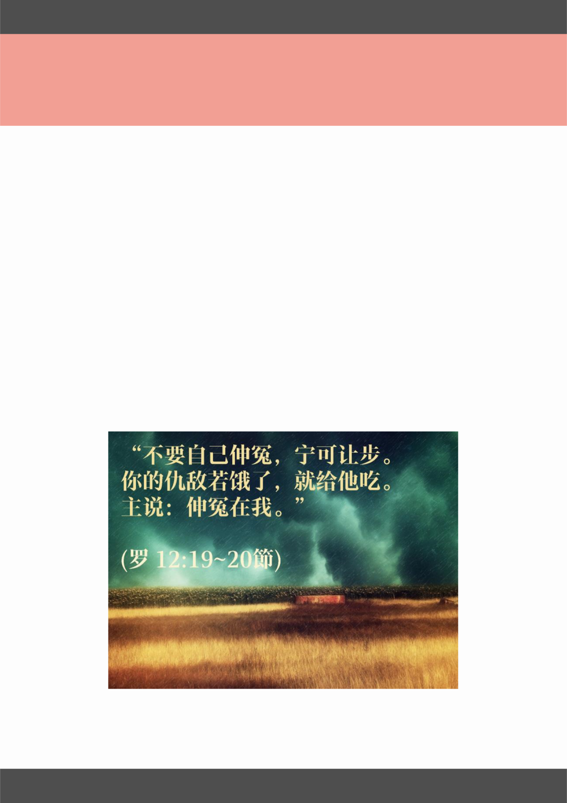

P A G E 0 7
总结：如何良好处理怒气
生气的四个阶段及处理方式：
1. 发生不愉快事情：明确告诉自己“我生气了”，身体不舒服
-当情绪受到激怒，肾上腺素会激增，整个人处在“备战”状
态：
血压升高、心跳加快、精神紧张、肠胃蠕动减慢、骨骼肌紧
缩、血管收缩、红 血球增厚等。若是经常生气，身体就会出现
高血压、心脏病、肌肉酸痛、头痛、 甚至会有中风及脑溢血
的现象。
2. 负面思想充斥：克制怒气，想离开现场，冷却情绪，暂停一
下，理理思想
3. 找出发怒原因：心被什么戳中了？
4. 勇敢面对：采取建设性和谈与行动